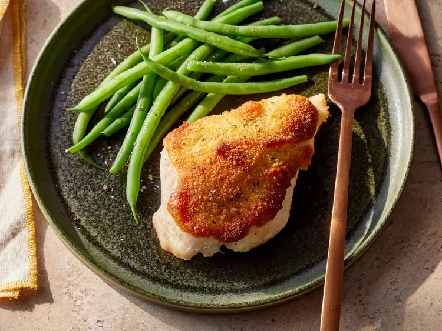

Odin Recipes
Parmesan Crusted Chicken

Description
This is parmesan crusted chicken.
Ingredients
- Mayonnaise
- Parmesan cheese
- Chicken breasts
- Italian seasoned bread crumbs
Steps
- Gather all ingredients. Preheat the oven to 425 degrees F (220 degrees C).
- Mix mayonnaise and Parmesan cheese together in a medium bowl until well combined.
- Arrange chicken breasts on a baking sheet. Evenly top with mayonnaise mixture, then sprinkle with bread crumbs to coat.
- Bake in the preheated oven until golden on top and chicken is cooked through, about 20 minutes.